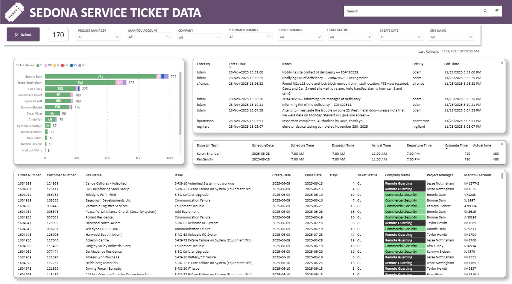
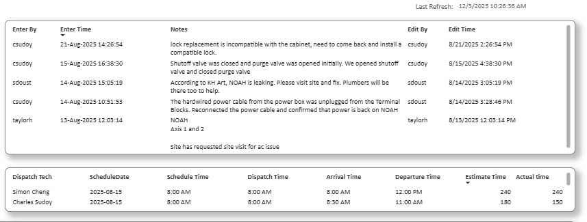
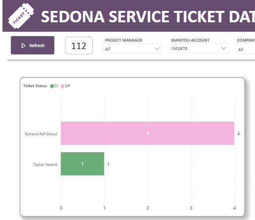

The Ticket Days Power BI dashboard was developed to track the number of days the Customer Service department takes to resolve customer site-related issues. The dashboard provides visibility into the complete resolution process by capturing the time spent reviewing service notes, coordinating with technicians, and working with technical support teams to resolve issues remotely. This enables management to better understand the effort involved in resolving customer concerns and identify opportunities for improving response and resolution times.
Data
The data for this dashboard is sourced from the Service table within the billing database. A SQL connector is used to connect the database to Power BI through an on-site data gateway, ensuring secure and reliable access to the required information. This setup allows the dashboard to display current and accurate service ticket data for reporting and analysis purposes.

Dashboard
The dashboard is designed to provide detailed performance statistics for the Customer Service department. It displays information for each customer service agent, including the accounts they have worked on and the number of days required to resolve each issue. The dashboard also tracks the number of technician dispatches to customer sites and provides visibility into all related activities, including both on-site and remote support efforts. This information helps management evaluate efficiency, resource utilization, and overall service performance.

Notes
The Notes section displays all comments entered by technicians while working on service tickets through the service ticket application. These notes provide valuable insight into the work completed on-site and help customer service representatives understand the history of each issue. The section also tracks technician arrival and departure times, allowing comparisons between estimated and actual service durations. This information supports better planning, scheduling, and resource allocation for future service activities.

Refresh Button
The dashboard includes a refresh button that allows users to update the report on demand. When the button is selected, a Power Automate workflow runs in the background and triggers a dataset refresh, ensuring that users have access to the most current information available without waiting for the scheduled refresh cycle.
Project History
This project was initiated in response to a management request for improved visibility into service ticket performance and resolution activities. The goal was to consolidate all backend service actions into a single dashboard, allowing the organization to measure the time, effort, and resources required to resolve customer issues. By analyzing service trends, resolution timelines, and technician activities, the dashboard helps identify areas for improvement and supports initiatives aimed at reducing resolution times and increasing operational efficiency.